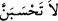

ŞEHİDLİK MAKAMI
169, 170. Allah yolunda öldürülenleri sakın ölü sanmayın. Bilakis onlar diridirler;
Allah’ın, lütuf ve kereminden kendilerine verdikleri ile sevinçli bir halde Rableri
yanında rızıklara mazhar olmaktadırlar. Arkalarından gelecek ve henüz
kendilerine katılmamış olan şehid kardeşlerine de hiçbir keder ve korku
bulunmadığı müjdesinin sevincini duymaktadırlar.
171. Onlar, Allah’dan gelen nîmet ve keremin; Allah’ın, mü’minlerin ecrini zâyi
etmeyeceği müjdesinin sevinci içindedirler.
“Allah yolunda öldürülenleri”, kesinlikle “ölüler sanma!” Bunlardan murad Uhud
şehidleridir. Bu şehidlerin dördü Muhacirler’den olup, bunlar da Hamza b.
Abdülmuttalib, Mus’ab b. Umeyr, Osman b. Şihâb ve Abdullah b. Cahş idi. Geri
kalanlar ise Ensâr’dandı. Tamamı yetmiş kişi idi.
Kâşânî şöyle diyor: “Sanma” mânasındaki (
)’nin herkesi muhâtap almış
olmasını kabul etmek daha fasîh ve daha beliğdir. Çünkü bu nehy, cihada teşvik eden
sâikleri artsın ve cihâdlarına karşılık olarak çok güzel şeyler elde edeceklerine kesin
olarak inansınlar diye, herkesi doğrudan ilgilendirmekte olan önemli bir buyruktur. Her
ne kadar sadece Peygamber Efendimiz’i muhâtap alıyor olsa da, bunun asıl maksadı,
ümmeti böyle bir zandan menedip şehidlerin durumu konusunda dikkat çekmektir.
Yoksa, Rasûl-i Ekrem (s.a.) böyle bir zanda bulunmayacak kadar yüce bir mertebededir.
“Hayır
onlar
diridirler.
Rableri
katında”
cennet
meyvelerinden
“rızıklandırılmaktadırlar.”
Şehîdlerin, mekân olarak Allah’ın yanında olmaları mümkün değildir. O halde maksat,
ikrâm ve tâzim olarak Allah katında olmalarıdır.
“Allah’ın, keremiyle kendilerine verdiklerinden sevinç duyarak” ki bunlar, daimi
nîmetlerle daha şimdiden faydalanmak; ebedî hayatı ve Allah Teâlâ’ya yakınlık
mertebesini kazanmak ve şehâdet şerefidir. Mâna şu şekildedir: Kardeşleri onlardan
sonraya kalmış kendileri ise onlardan önce öldürülmüştür. “Arkalarından” henüz Allah
yolunda öldürülmediklerinden dolayı kendilerine yetişememiş olan; kardeşlerine de